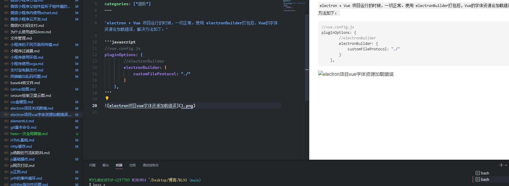

hexo一次全局替换
hexo内引入图片使用的方式，但是在hexo里，会有一个与文档title同名的目录（如果title没改的话）,
在hexo里()内不用写目录，直接写图片名称+后缀即可。
以本文档为例，名为“hexo一次全局替换”，图片链接就可以写为，在hexo的服务器与部署服务器
上就能展示，但是本地显示的是图二右边破损的图标


所以为兼容本地和服务器显示，应写为 a代表的就是同名文件夹
但是由于该项目历史文档较多，所以写了一个node进行自动替换，代码如下
const fs = require('fs');
const path = require('path');
const pathName = '_posts'
let arr = []
arr.map(item => {
fs.readFile(`${pathName}/${item.name}`, {encoding: 'utf8'}, (err, data) => {
if (err) {
console.log('err');
} else {
let reg = /title.*/
let title = reg.exec(data)
if (title) {
title = title[0].replace('title: ', '')
let imgPath = data.replace(/]\((.*)\)/g, `]\(${title}/$1\)`)
fs.writeFile(`${pathName}/${item.name}`, imgPath, (err1, data1) => {
if (err1) {
console.log('err1')
} else {
console.log(data1)
}
})
} else {
console.log('')
}
}
})
})
本博客所有文章除特别声明外，均采用 CC BY-NC-SA 4.0 许可协议。转载请注明来源 我的博客！